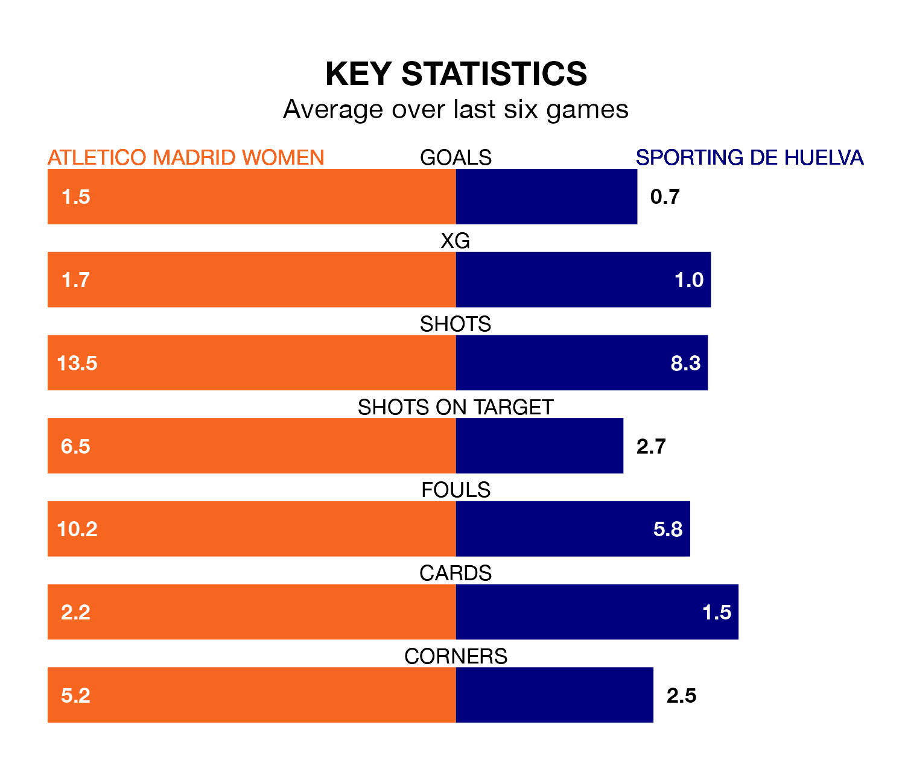

Sporting de Huelva make the journey to Centro Deportivo Alcalá de Henares to play Atletico Madrid Women on late Sunday looking to pick up points to end their four-game losing streak.
Sporting's struggles have left them with just three points from their last six Liga F matches, while their opponents have earned six from a possible 18.
Sporting are bottom of the table after 18 games, of which they have won one and drawn one, earning four points.
Atletico Madrid are 11 places ahead of the visitors in fifth, with nine wins and five draws putting them on 32 points.
With 11 goals in 18 games so far this season, Sporting are the league's joint-second-lowest scorers with 0.6 goals per game. And they are conceding more than average, letting in 41 goals at a rate of 2.3 per game.
The home team, meanwhile, are above average scorers, with 1.8 goals per game, compared to a league average of 1.6. They have conceded 0.8 goals per game.
In Sheila Guijarro Gómez, Atletico Madrid have one of the league's most on-form strikers so far this season. She has notched 12 goals in 17 appearances, to sit second in the scoring charts.
Her goal rate of one every 115 minutes is much quicker than that of Laia Balleste, Sporting's top scorer with a goal every 421 minutes, and a total of three goals in 16 games.
In the last 10 years, Atletico Madrid and Sporting have played each other on 20 occasions. Atletico Madrid won 17 of them, Sporting one, and they drew twice.
On average, Atletico Madrid scored 2.5 goals and Sporting 0.8 in those matches.
Their last meeting was on October 21, when Atletico Madrid won 2-0 away.
Atletico Madrid's last match was on February 18, a 2-0 loss against Barcelona Women.
Sporting lost 3-1 against Valencia Women last time out, on February 17, with Sandra Castelló Oliver on the scoresheet.
Updated: 09:34 (UTC), 08/03/24